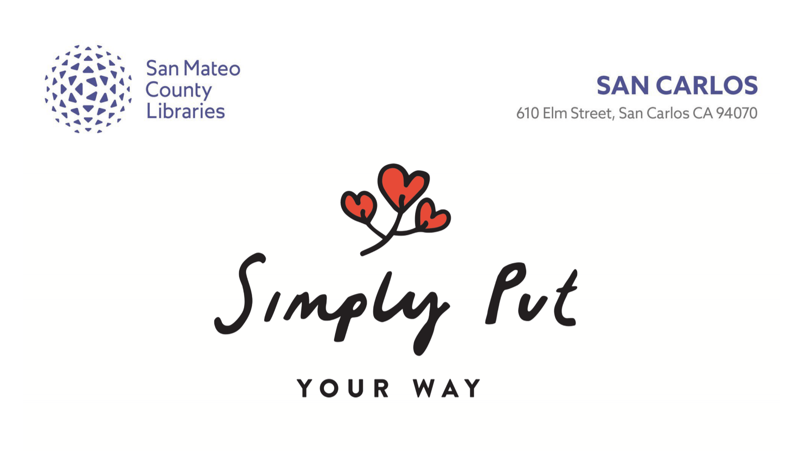

<div id="events">
  <div class="contentWrapper">
    <!-- where to donate? -->
    <section class="whereToDonate">
      <div class="container-fluid">
        <div class="row">
          <div class="col-md-12 whereToDonateHeader">
            <div class="text-center">
              <h1 class="events-title">Upcoming Events</h1>
            </div>
          </div>
        </div>
      </div>
      <div class="container charities">
        <div class="row">
          <div class="col-md-12">
            <!-- <div class="flex-parent">
              <div class="flex-kid left">
                
              </div>
              <div class="flex-kid right">
                
              </div>
            </div>
            <div class="flex-parent">
              <div class="flex-kid center">
                
              </div>
            </div> -->
            <div class="header-image-wrapper">
              
            </div>
            <!-- <h1 class="sub-title">Organize for Fall</h1>
            <p>Do you have at least one organizing project that you’ve been putting off? Discover ways to transform your living space into an inviting, comfortable place to call home. The experience can be rewarding when the challenge is eased by breaking down the components into bite size pieces. I’ll share my perspective of how to organize any project, keeping your eye on the end result, while taking the “ick” out of the process. Some ideas that will be shared include</p>
            <ul class="idea-list">
              <li>Getting Started</li>
              <li>Tackling Memorabilia</li>
              <li>Paper Pile Dilemmas</li>
              <li>Timelines, Goals and Tasks</li>
              <li>Space Planning</li>
              <li>How and Where to Recycle Things</li>
            </ul>
            <p>With more than five years in the field of organizing and a lifetime of experience in creating simpler ways to be efficient, I’m happy to share my skills with you. For those of you that have purchased an organizing book with the thought of getting this accomplished on your own, you’ll be inspired to listen to fresh insight and local resources. If you’d like to enrich your knowledge of how to achieve your organizing goals, I look forward to meeting you.</p>
            <h4 class="workshop-intro">Please join me for this complimentary <br class="mobile-only">90-minute workshop:</h4>
            <p class="event-info"><strong>Saturday, September 22 from 3:00 – 4:30 p.m.</strong>
            <br>San Carlos Library, Upstairs, Room B
            <br>610 Elm Street, San Carlos 94070
            <br><a href="https://bit.ly/2uRHcsg">More Info</a></p> -->
            <h1 class="sub-title">New Year for Organizing Workshops</h1>
            <p class="tourdates">​Saturday, January 5, Portola Valley Library, 1:00 - 2:00 p.m.<br/>​Tuesday, January 8, Atherton Library, 6:30 - 7:30 p.m.<br/>​Saturday, January 12, Foster City Library, 2:00 - 3:00 p.m.<br/>​Wednesday, January 23, Millbrae Library, 6:30 - 7:30 p.m.<br/>​Saturday, February 23, Belmont Library, 2:00 - 3:00 p.m.</p>
            <a href="https://smcl.bibliocommons.com/events/search/index">More Info</a>
            <p>Explore new ideas for transforming the challenging areas of your home into desirable living spaces in this 60-minute complimentary workshop. When time is set aside to tackle the distraction of clutter, you’ll find the reward will be more free time and less stress. Broken down into bite size components, organizing a space, room or entire home can be life changing. Some ideas that will be shared include:</p>
            <ul class="idea-list">
              <li>Getting Started</li>
              <li>Tackling Memorabilia</li>
              <li>Paper Pile Dilemmas</li>
              <li>Timelines, Goals and Tasks</li>
              <li>Space Planning</li>
              <li>How and Where to Recycle Things</li>
            </ul>
            <p>With more than five years in the field of organizing and a lifetime of experience in creating simpler ways to be efficient, I’m happy to share my skills with you. For those of you that have purchased an organizing book with the thought of getting this accomplished on your own, you’ll be inspired to listen to fresh insight and local resources. If you’d like to enrich your knowledge of how to achieve your organizing goals, I look forward to meeting you.</p>
          </div>
        </div>
        <div class="row contact">
          <div class="col-md-12">
            <div class="contact-wrapper">
              <div class="contact-item">
                <p><strong>Wendy C. Quaccia</strong>
                <br><strong>Professional Home Organizer</strong>
                <br>Member of the National Association
                <br>of Professional Organizers - SFBA</p>
              </div>
              <div class="contact-item">
                
              </div>
            </div>
          </div>
        </div>
      </div>
    </section>
  </div>
</div>
